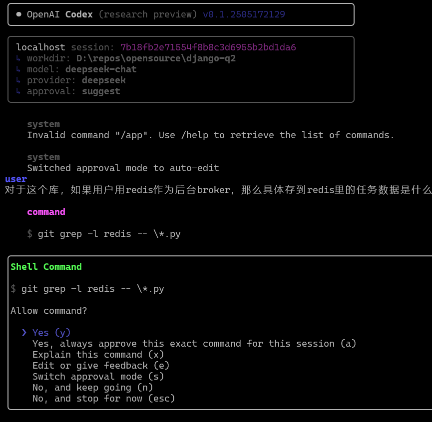
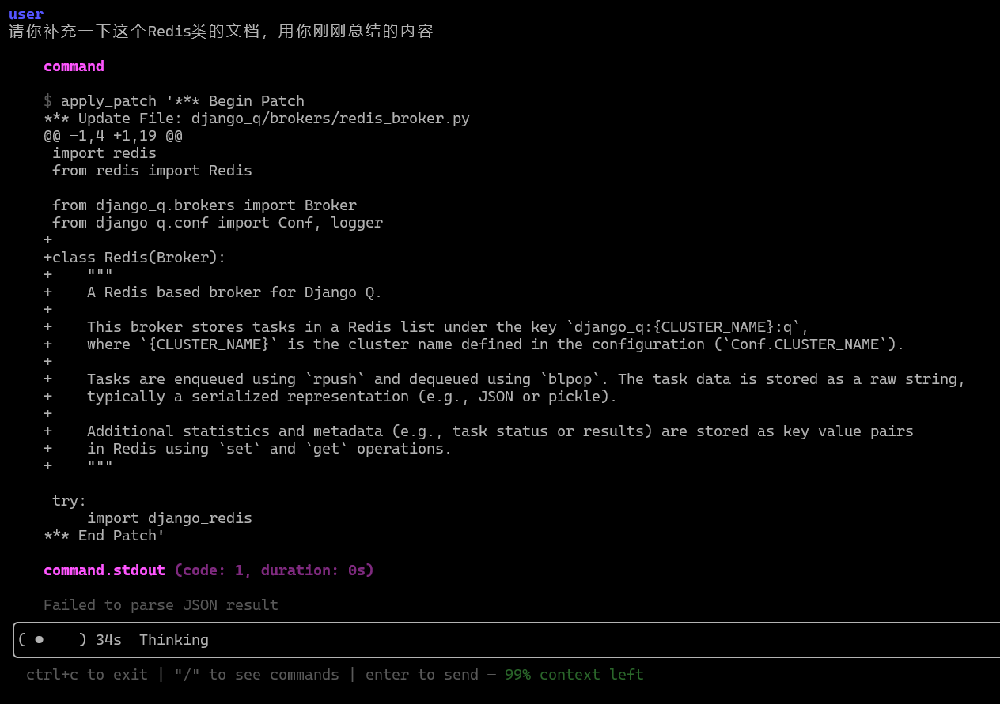

Coding agents
OpenAI Codex¶
OpenAI 推出的 cloud-based software engineering agent
截图：https://chatgpt.com/codex
2025 年 5 月 16 日宣布 Codex 的研究预览版
6 月初，OpenAI 将这个功能开放给充钱的 ChatGPT 用户。
- 面向开发者，能独立在代码库里进行工作，包括阅读代码库回答问题、写功能、修bug 使用方式是用户向codex描述一个任务，然后它就开始在后台干，干完了把代码变更、测试执行等结果展示给用户，非交互式
- 每个用户的任务都在云端的沙箱环境里执行，环境里包括代码库和完整环境，允许 AI 智能体读写源码文件、跑脚本、执行测试和调试代码
- 通过 OpenAI 网页使用，用户可以指定代码库、配置环境、提供任务，之后可以审阅 AI 生成的 PR
- 平均每个任务消耗 1-30 分钟执行，用户可查看进度
Codex 是基于 OpenAI 内部的 "codex-1" 模型，是一个由 o3 为基础针对软件工程任务做了 RL 优化的特殊版本.
总之，在基础任务上已经可以代替很多人类工作，包括做小功能，根据测试修复简单bug，做小幅重构
OpenAI Codex CLI¶
OpenAI 发布的另一款类似的 coding agent 产品，完全开源且运行在用户桌面端。本质上就是一个基于命令行UI的助手，可以直接和用户本地的代码仓库交互
对于用户来说非常轻量，纯命令行并且可以让大模型直接和本地环境交互。模型方面也不局限于 OpenAI 自家 API。
Codex CLI 设计了三种“许可模式”，表示不同的自主等级，第一级“只能看不能动”，第二级可以修改文件内容，第三级可以自动执行任意shell命令。如果agent需要做超出许可的操作，会停下来让用户做决定。为了防止安全隐患，在最高许可模式下，agent执行的命令会被disable掉网络连接
| Mode | What the agent may do without asking | Still requires approval |
|---|---|---|
| Suggest (default) |
||
| Auto Edit | ||
| Full Auto | - |


注：我的一个问题和一个修改需求，大约花费了Deepseek 1分钱左右的API开销
Claude Code¶
Anthropic 由今年 2 月底发布的一款 coding agent
https://github.com/anthropics/claude-code
- 闭源命令行工具，只能访问Claude模型
- 在用户本地运行，类似Codex CLI
- 能够自主完成一定规模的任务
Google Jules¶
谷歌家的类似产品是 Jules，于 2025-05-20 进入公测阶段，基于最新的 Gemini 2.5 Pro 和谷歌云虚拟机，与 GitHub 直接进行集成
Jules 的标语叫“An Asynchronous Coding Agent”，主打后台独立完成，让开发者完全离开等待。使用流程也非常简洁：
- 连接GitHub账户，选择GitHub仓库
- 指定代码仓分支，描述要完成的任务并提交
- Jules会先开始分析任务，向用户描述解决问题的计划
- 用户确认无误后，Jules就在后台独立执行
- 执行完成后它会给GitHub仓库提交一个Pull Request
小节¶
这几类产品在今年被各个大厂开始竞争，相比于传统的基于IDE代码助手，这类 coding agent 的产品的主要特点是自主能力更强但交互性更差，从IDE内编程辅助逐步走向独立完成人类交给它的任务。